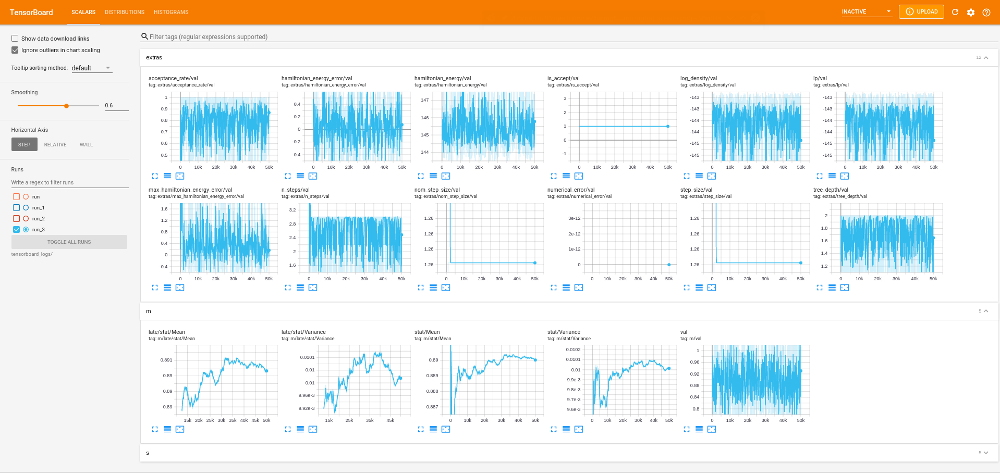
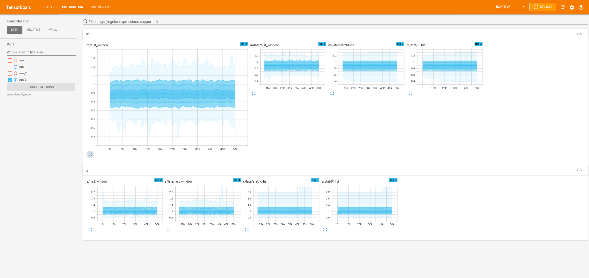

TuringCallbacks
Getting started
As the package is not yet officially released, the package has to be added from the GitHub repository:
julia> ]
pkg> add TuringCallbacks.jlVisualizing sampling on-the-fly
TensorBoardCallback is a wrapper around Base.CoreLogging.AbstractLogger which can be used to create a callback compatible with Turing.sample.
To actually visualize the results of the logging, you need to have installed tensorboard in Python. If you do not have tensorboard installed, it should hopefully be sufficient to just run
pip3 install tensorboardThen you can start up the TensorBoard:
python3 -m tensorboard.main --logdir tensorboard_logs/runNow we're ready to actually write some Julia code.
The following snippet demonstrates the usage of TensorBoardCallback on a simple model. This will write a set of statistics at each iteration to an event-file compatible with Tensorboard:
using Turing, TuringCallbacks
@model function demo(x)
s ~ InverseGamma(2, 3)
m ~ Normal(0, √s)
for i in eachindex(x)
x[i] ~ Normal(m, √s)
end
end
xs = randn(100) .+ 1;
model = demo(xs);
# Number of MCMC samples/steps
num_samples = 10_000
num_adapts = 100
# Sampling algorithm to use
alg = NUTS(num_adapts, 0.65)
# Create the callback
callback = TensorBoardCallback("tensorboard_logs/run")
# Sample
chain = sample(model, alg, num_samples; callback = callback)While this is sampling, you can head right over to localhost:6006 in your web browser and you should be seeing some plots!

In particular, note the "Distributions" tab in the above picture. Clicking this, you should see something similar to:

And finally, the "Histogram" tab shows a slightly more visually pleasing version of the marginal distributions:

Note that the names of the stats following a naming $variable_name/... where $variable_name refers to name of the variable in the model.
Choosing what and how you log
Statistics
In the above example we didn't provide any statistics explicit and so it used the default statistics, e.g. Mean and Variance. But using other statistics is easy! Here's a much more interesting example:
# Create the stats (estimators are sub-types of `OnlineStats.OnlineStat`)
stats = Skip(
num_adapts, # Consider adaptation steps
Series(
# Estimators using the entire chain
Series(Mean(), Variance(), AutoCov(10), KHist(100)),
# Estimators using the entire chain but only every 10-th sample
Thin(10, Series(Mean(), Variance(), AutoCov(10), KHist(100))),
# Estimators using only the last 1000 samples
WindowStat(1000, Series(Mean(), Variance(), AutoCov(10), KHist(100)))
)
)
# Create the callback
callback = TensorBoardCallback("tensorboard_logs/run", stats)
# Sample
chain = sample(model, alg, num_samples; callback = callback)Tada! Now you should be seeing waaaay more interesting statistics in your TensorBoard dashboard. See the OnlineStats.jl documentation for more on the different statistics, with the exception of Thin, Skip and WindowStat which are implemented in this package.
Note that these statistic estimators are stateful, and therefore the following is bad:
julia> s = AutoCov(5)AutoCov: n=0 | value=[NaN, NaN, NaN, NaN, NaN, NaN]julia> stat = Series(s, s) # => 10 samples but `n=20` since we've called `fit!` twice for each observationSeries ├─ AutoCov: n=0 | value=[NaN, NaN, NaN, NaN, NaN, NaN] └─ AutoCov: n=0 | value=[NaN, NaN, NaN, NaN, NaN, NaN]julia> fit!(stat, randn(10))Series ├─ AutoCov: n=20 | value=[1.28662, 0.46817, -0.35028, -0.297183, -0.244086, -0.229182] └─ AutoCov: n=20 | value=[1.28662, 0.46817, -0.35028, -0.297183, -0.244086, -0.229182]
while the following is good:
julia> stat = Series(AutoCov(5), AutoCov(5)) # => 10 samples AND `n=10`; great!Series ├─ AutoCov: n=0 | value=[NaN, NaN, NaN, NaN, NaN, NaN] └─ AutoCov: n=0 | value=[NaN, NaN, NaN, NaN, NaN, NaN]julia> fit!(stat, randn(10))Series ├─ AutoCov: n=10 | value=[1.24857, -0.794592, 0.129023, 0.278469, -0.439388, 0.266544] └─ AutoCov: n=10 | value=[1.24857, -0.794592, 0.129023, 0.278469, -0.439388, 0.266544]
Since at the moment the only support statistics are sub-types of OnlineStats.OnlineStat. If you want to log some custom statistic, again, at the moment, you have to make a sub-type and implement OnlineStats.fit! and OnlineStats.value. By default, a OnlineStat is passed to tensorboard by simply calling OnlineStat.value(stat). Therefore, if you also want to customize how a stat is passed to tensorbord, you need to overload TensorBoardLogger.preprocess(name, stat, data) accordingly.
Filter variables to log
Maybe you want to only log stats for certain variables, e.g. in the above example we might want to exclude m and exclude the sampler statistics:
callback = TensorBoardCallback(
"tensorboard_logs/run", stats;
exclude = ["m", ], include_extras = false
)Or you can create the filter (a mapping variable_name -> ::Bool) yourself:
var_filter(varname, value) = varname != "m"
callback = TensorBoardCallback(
"tensorboard_logs/run", stats;
filter = var_filter
)Supporting TensorBoardCallback with your own sampler
It's also possible to make your own sampler compatible with TensorBoardCallback.
To do so, you need to implement the following method:
TuringCallbacks.params_and_values — Functionparams_and_values(model, transition[, state]; kwargs...)
params_and_values(model, sampler, transition, state; kwargs...)Return an iterator over parameter names and values from a transition.
If you don't have any particular names for your parameters, you're free to make use of the convenience method
TuringCallbacks.default_param_names_for_values — Functiondefault_param_names_for_values(x)Return an iterator of θ[i] for each element in x.
The params_and_values(model, sampler, transition, state; kwargs...) is not usually overloaded, but it can sometimes be useful for defining more complex behaviors.
For example, if the transition for your MySampler is just a Vector{Float64}, a basic implementation of TuringCallbacks.params_and_values would just be
function TuringCallbacks.params_and_values(transition::Vectorr{Float64}; kwargs...)
param_names = TuringCallbacks.default_param_names_for_values(transition)
return zip(param_names, transition)
endOr sometimes the user might pass the parameter names in as a keyword argument, and so you might want to support that with something like
function TuringCallbacks.params_and_values(transition::Vectorr{Float64}; param_names = nothing, kwargs...)
param_names = isnothing(param_names) ? TuringCallbacks.default_param_names_for_values(transition) : param_names
return zip(param_names, transition)
endFinally, if you in addition want to log "extra" information, e.g. some sampler statistics you're keeping track of, you also need to implement
TuringCallbacks.extras — Functionextras(model, transition[, state]; kwargs...)
extras(model, sampler, transition, state; kwargs...)Return an iterator with elements of the form (name, value) for additional statistics in transition.
Default implementation returns an empty iterator.
Types & Functions
TuringCallbacks.MultiCallback — TypeMultiCallbackA callback that combines multiple callbacks into one.
Implements push!! to add callbacks to the list.
TuringCallbacks.Skip — Typemutable struct Skip{T, O<:OnlineStat{T}} <: OnlineStat{T}Usage
Skip(b::Int, stat::OnlineStat)Skips the first b observations before passing them on to stat.
TuringCallbacks.TensorBoardCallback — Typestruct TensorBoardCallback{L, F1, F2, F3}Wraps a CoreLogging.AbstractLogger to construct a callback to be passed to AbstractMCMC.step.
Usage
TensorBoardCallback(; kwargs...)
TensorBoardCallback(directory::string[, stats]; kwargs...)
TensorBoardCallback(lg::AbstractLogger[, stats]; kwargs...)Constructs an instance of a TensorBoardCallback, creating a TBLogger if directory is provided instead of lg.
Arguments
lg: an instance of anAbstractLoggerwhich implementsTuringCallbacks.increment_step!.stats = nothing:OnlineStator lookup for variable name to statistic estimator. Ifstats isa OnlineStat, we will create aDefaultDictwhich copiesstatsfor unseen variable names. Ifisnothing, then aDefaultDictwith a default constructor returning aOnlineStats.Seriesestimator withMean(),Variance(), andKHist(num_bins)will be used.
Keyword arguments
num_bins::Int = 100: Number of bins to use in the histograms.filter = nothing: Filter determining whether or not we should log stats for a particular variable and value; expected signature isfilter(varname, value). Ifisnothinga default-filter constructed fromexcludeandincludewill be used.exclude = String[]: If non-empty, these variables will not be logged.include = String[]: If non-empty, only these variables will be logged.include_extras::Bool = true: Include extra statistics from transitions.extras_include = String[]: If non-empty, only these extra statistics will be logged.extras_exclude = String[]: If non-empty, these extra statistics will not be logged.extras_filter = nothing: Filter determining whether or not we should log extra statistics; expected signature isfilter(extra, value). Ifisnothinga default-filter constructed fromextras_excludeandextras_includewill be used.include_hyperparams::Bool = true: Include hyperparameters.hyperparam_include = String[]: If non-empty, only these hyperparameters will be logged.hyperparam_exclude = String[]: If non-empty, these hyperparameters will not be logged.hyperparam_filter = nothing: Filter determining whether or not we should log hyperparameters; expected signature isfilter(hyperparam, value). Ifisnothinga default-filter constructed fromhyperparam_excludeandhyperparam_includewill be used.directory::String = nothing: if specified, will together withcommentbe used to define the logging directory.comment::String = nothing: if specified, will together withdirectorybe used to define the logging directory.
Fields
logger::Base.CoreLogging.AbstractLogger: Underlying logger.stats::Any: Lookup for variable name to statistic estimate.variable_filter::Any: Filter determining whether to include stats for a particular variable.include_extras::Bool: Include extra statistics from transitions.extras_filter::Any: Filter determining whether to include a particular extra statistic.include_hyperparams::Bool: Include hyperparameters.hyperparam_filter::Any: Filter determining whether to include a particular hyperparameter.param_prefix::String: Prefix used for logging realizations/parametersextras_prefix::String: Prefix used for logging extra statistics
TuringCallbacks.Thin — Typemutable struct Thin{T, O<:OnlineStat{T}} <: OnlineStat{T}Usage
Thin(b::Int, stat::OnlineStat)Thins stat with an interval b, i.e. only passes every b-th observation to stat.
TuringCallbacks.WindowStat — Typestruct WindowStat{T, O} <: OnlineStat{T}Usage
WindowStat(b::Int, stat::O) where {O <: OnlineStat}"Wraps" stat in a MovingWindow of length b.
value(o::WindowStat) will then return an OnlineStat of the same type as stat, which is only fitted on the batched data contained in the MovingWindow.
Internals
TuringCallbacks.default_param_names_for_values — Methoddefault_param_names_for_values(x)Return an iterator of θ[i] for each element in x.
TuringCallbacks.extras — Methodextras(model, transition[, state]; kwargs...)
extras(model, sampler, transition, state; kwargs...)Return an iterator with elements of the form (name, value) for additional statistics in transition.
Default implementation returns an empty iterator.
TuringCallbacks.filter_extras_and_value — Methodfilter_extras_and_value(cb::TensorBoardCallback, name, value)Filter extras and values from a transition based on the filter of cb.
TuringCallbacks.filter_hyperparams_and_value — Methodfilter_hyperparams_and_value(cb::TensorBoardCallback, name, value)Filter hyperparameters and values from a transition based on the filter of cb.
TuringCallbacks.filter_param_and_value — Methodfilter_param_and_value(cb::TensorBoardCallback, param_name, value)Filter parameters and values from a transition based on the filter of cb.
TuringCallbacks.hyperparam_metrics — Methodhyperparam_metrics(model, sampler[, transition, state]; kwargs...)Return a Vector{String} of metrics for hyperparameters in model.
TuringCallbacks.hyperparams — Methodhyperparams(model, sampler[, transition, state]; kwargs...)Return an iterator with elements of the form (name, value) for hyperparameters in model.
TuringCallbacks.params_and_values — Methodparams_and_values(model, transition[, state]; kwargs...)
params_and_values(model, sampler, transition, state; kwargs...)Return an iterator over parameter names and values from a transition.
TuringCallbacks.push!! — Methodpush!!(cb::MultiCallback, callback)Add a callback to the list of callbacks, mutating if possible.
TuringCallbacks.tb_name — Methodtb_name(args...)Returns a string representing the name for arg or args in TensorBoard.
If length(args) > 1, args are joined together by "/".
Index
TuringCallbacks.MultiCallbackTuringCallbacks.SkipTuringCallbacks.TensorBoardCallbackTuringCallbacks.ThinTuringCallbacks.WindowStatTuringCallbacks.default_param_names_for_valuesTuringCallbacks.default_param_names_for_valuesTuringCallbacks.extrasTuringCallbacks.extrasTuringCallbacks.filter_extras_and_valueTuringCallbacks.filter_hyperparams_and_valueTuringCallbacks.filter_param_and_valueTuringCallbacks.hyperparam_metricsTuringCallbacks.hyperparamsTuringCallbacks.params_and_valuesTuringCallbacks.params_and_valuesTuringCallbacks.push!!TuringCallbacks.tb_name